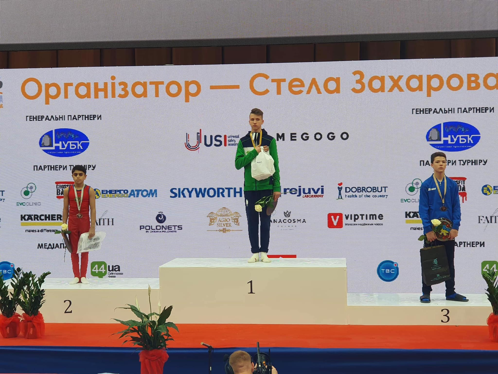

Հայաստանի Ազգային Օլիմպիական Կոմիտեի հովանավորությամբ. օլիմպիական ուղեգիր նվաճած մարմնամարզիկ՝ Արթուր Դավթյանը 21 օրյա հավագ կանցկացնի Վրաստանի Թբիլիսի քաղաքում (20.06-11.07):ՀՀ սպորտային մարմնամարզության ողջ հավաքականը՝ այդ թվում օլիմպիական ուղեգիր նվաճած Արթուր Դավթյանը, հավաքականի գլխավոր մարզիչ Հակոբ Սերոբյանի գլխավորությամբ, ընդլայնված կազմով հավաք կանցկացնի Թբիլիսիում: Սա կլինի վերջին մեծ նախապատրաստությունը օլիմպիական խաղեր մեկնելուց առաջ, բացի այդ հավաքականի անդամենրը հնարավորություն կունենան բարդացնել իրենց վարժությունները և փորձարկեն նոր ավելի բարդ տարրեր: Այս ստուգատեսին ամենկարևոր հանգամանքը կլինի առանց վնասվածքների մարզումների անցկացումը:
Օլիմպիական խաղերին մնաց 50 օր... Տեսնել ավելին...

«Ուկրաինայի Միջազգային Գավաթ 2021» խորագրով միջազգային մրցաշարի (22.05-23.05) արդյունքները. Արթուր Դավթյան. նժույգ թափեր 2-րդ հորիզոնական, օղակ 2-րդ հորիզոնական, հենացատկ 2- րդ հորիզոնական, Համլետ մանուկյան. ազատ վարժություն 2- րդ հորիզոնական, նժույգ թափեր 2- րդ հորիզոնական, օղակ 2- րդ հորիզոնական, զուգափայտ 2- րդ հորիզոնական:
«Ուկրաինայի Միջազգային Գավաթ 2021» խորագրով միջազգային մրցաշարին (22.05-23.05) ՀՀ մարմնամարզության հավաքականը կներկայանա հետևյալ կազմով. մեծահասակներ (տղա) ՝ Եվրոպայի նորընծա չեմպիոն Արթուր Դավթյան և Եվրոպայի եզրափակչի մասնակից Գագիկ Խաչիկյան, երիտասարդներ (տղա)՝ Քութաիսիի գավաթակիր Համլետ Մանուկյան, մեծահասակներ (աղջիկ)՝ Աննա Գրիգորյան:
«Քութաիսի Գավաթ - Մեր Ապագա Օլիմպիականները» խորագրով միջազգային մրցաշար (05.05-10.05) Ազատ վարժություններ. 1. Համլետ Մանուկյան 2. Նորայր Հովհաննիսյան 3. լեհաստանի ներկայացուցիչ Նժույգ թափեր. 1. Մամիկոն Խաչատրյան 2. Համլետ Մանուկյան 3. բելառուսիայի ներկայացուցիչ Օղակներ. 1. Էրիկ Բաղդասարյան 2. Համլետ Մանուկյան 3. լեհաստանի ներկայացուցիչ Հենացատկ. 1. վրաստանի ներկայացուցիչ 2. Համլետ Մանուկյան և բելառուսիայի ներկայացուցիչ Զուգափայտեր. 1. Էրիկ Բաղդասարյան 2. Մամիկոն Խաչատրյան 3. բելառուսիայի ներկայացուցիչ Պտտաձող. 1. Էրիկ Բաղդասարյան 2. Մամիկոն Խաչատրյան 3. բելառուսիայի ներկայացուցիչ: ՇՆՈՐՀԱԿԱԼ ԵՆՔ ՄԵՐ ՄԱՐԶԻՉՆԵՐԻՆ
Ավարտին մոտեցավ մրցումային 4-րդ օրը: Վաղը մրցումները կմեկնարկեն տեղական ժամանակով ժամը 3:00-ին. Արթուր Դավթյանը իր ուժերը կփորձի հենացատկում: Հերարձակումը դիտեք https://www.eurovisionsports.tv/europeangymnastics կայքում:

Սպորտային մարմնամարզության ՀՀ մեծահասակների առաջնության հանդիսավոր բացմանը ներկա են եղել՝ Օլիմպիական չեմպիոններ Ալբերտ Ազարյանը և Լևոն Ջուլֆալակյանը, Աշխարհի և Եվրոպաի չեմպիոն Նազիկ Ավդալյանը, Երևանի քաղաքապետարանի սպորտի և երիտասարդության հարցերի գլխավոր մասնագետ Արա Բաղրամյանը, առաջատար մասնագետ Արշալույս Գասպարյանը, ԿԳՄՍ նախարարության սպորտի և քաղաքականության վարչության բաժնի պետ Արթուր Սեդրակյանը, գլխավոր մասնագետ, ՀՄՖ փոխնախագահ Շուշանիկ Հարութունյանը:
Հայաստանի Մարմնամարզության Ֆեդերացիայի և Ա. Ազարյանի անվան ՕՀՄԴ - ի նախաձեռնությաբ փետրվարի 11- ին մարզադպրոցում նշվեց լեգենդար մարզիկ, եռակի օլիմպիական չեմպիոն ԱԼԲԵՐՏ ԱԶԱՐՅԱՆԻ 92 ամյակը: Օլիմպիական չեմպիոն շնորհավորելու էին եկել ԿԳՄՍ փոխնախարար Կարեն Գիլոյանը, Երևանի քաղաքապետարանի սպորտի վարչության ներկայացուցիչները: ՀՄՖ նախագահ Գագիկ Վանոյանի կողմից Ա. Ազարյանին շնորհվեց ՀՄՖ Պատվո Նշան որը տրվում էր առաջին անգամ (001): ՀՄՖ Գ. Վանոյանը շնորհավորել է Ա. Ազարյանին. «Շնորհավորում եմ լեգենդար Ազարյան՝ ծննդյանդ 92 ամյակի առթիվ։ Ձեր հաղթանակն ու ներդրումն անգնահատելի եւ անփոխարինելի է հայ մարմնամարցության մեջ։ Մաղթում եմ Ձեզ ուժ ու եռանդ, տոկունություն, որպեսզի դեռ երկար տարիներ փոխանցեք Ձեր գիտելիքներն ու փորձը մեր աճող սերնդին, Ձեր քաջալերումը ՝ մեր ներկա եւ ապագա տաղանդավոր մարզիկներին»։

Հիմք ընդունելով վարչապետի միջնորդությունը՝ համաձայն Սահմանադրության 136-րդ հոդվածի, ինչպես նաև «Հայաստանի Հանրապետության պետական պարգևների և պատվավոր կոչումների մասին» օրենքի 5.3-րդ հոդվածի 1-ին մասի. Ֆիզիկական կուլտուրայի և սպորտի զարգացման գործում ունեցած վաստակի համար Հայաստանի Հանրապետության վաստակավոր մարզչի պատվավոր կոչում է շնորվել Հայաստանի երիտասարդական հավաքականի ավագ մարզիչ Հայկ Արմենակի Նազարյանին: Հայաստանի Մարմնամարզության Ֆեդերացիան շնորհավորում է պարոն Նազարյանին՝ մաղթելով բեղմնավոր աշխատանք:
ՀՀ կրթության, գիտության, մշակույթի և սպորտի նախարարի տեղակալ Կարեն Գիլոյանն այսօր ընդունել է Հայաստանի մարզական ֆեդերացիաների ներկայացուցիչներին: Ողջունելով ներկաներին՝ նախարարի տեղակալը խոսել է սերտ համագործակցության անհրաժեշտության, համատեղ ծրագրերի ընդլայնման և ֆեդերացիաների գործունեության արդյունավետությունը բարձրացնելու տարբերակների մասին: Կարեն Գիլոյանն ընդգծել է, որ պատերազմի և կորոնավիրուսի համավարակի հարուցած դժվարությունները շատ են, սակայն հանձնվելը մարզաշխարհին բնորոշ չէ, ուստի համատեղ ուժերով հնարավոր կլինի դիմակայել մարտահրավերներին. «Սա մեր առաջին հանդիպումն է և համատեղ աշխատանքի սկիզբը: Պատերազմը, համավարակը, տնտեսական խնդիրներն անհետևանք չեն մնացել նաև սպորտի ոլորտի համար: Կան դժվարություններ, բայց հետևողական և տքնաջան աշխատանքի շնորհիվ կկարողանանք վերականգնվել, ապա առաջընթաց գրանցել»: